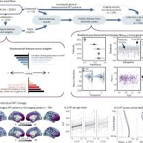
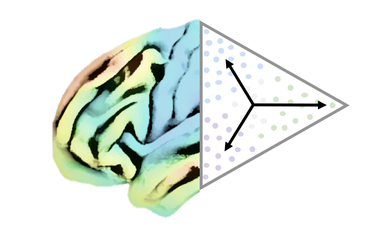

Research Framework
Brain organization is neither purely genetic nor purely environmental; it's the interaction that matters. Genetic and evolutionary constraints provide a scaffold, but this architecture is continuously sculpted by social experience through neurodevelopmental processes, learning-related plasticity, and aging-related change.
At the microscale, cortical laminar organization and myeloarchitecture provide substrates for local computation. At the macroscale, organizational gradients and network configurations enable integrated processes including perception, memory, decision-making, and social cognition. The extended period of human neurodevelopment and our reliance on social relationships for learning make the social environment a particularly potent sculptor of brain architecture.
We examine how this biosocial architecture both constrains and enables cognitive capacities, and how these relationships operate bidirectionally over developmental and evolutionary time. At the same time, even if genes and evolution shape brain organization, we must not forget the environment plays a crucial role in shaping our brains and minds.
Research Pillars
Pillar 1: Neurogenetic Principles of Brain Organization
Understanding how the brain supports interaction with the social environment requires knowing the genetic and evolutionary constraints that shape neural architecture. It's like understanding the blueprint before you can understand how people use the building.
Key Questions:
- What genetic factors constrain brain organization?
- What structural and functional differences between humans and non-human primates provide clues about the evolutionary basis of human cognitive capacities?
- How does brain architecture support function, and how do these relationships vary across scales?
What we do:
We combine ultra-high resolution imaging with large-scale population datasets and cross-species comparisons. Our computational models link microstructural organization to network dynamics and cognitive functions, revealing evolutionarily conserved principles alongside human-specific adaptations. For instance, we've found that organizational axes of the human cortex align with dual-origin theory and are conserved across primates—suggesting these principles may be fundamental organizing features shaped by evolution.
Representative work: Valk 2020, Science Advances; Valk 2022, Nature Communications; Wan 2022, eLife; Magielse 2023, Communications Biology; Saberi 2024, Science Advances
Pillar 2: Plasticity and Environment
Genetic scaffolding is just the starting point. Brain organization is continually shaped by environmental experience—through neurodevelopment, context-specific plasticity, and aging. The human cortex has an extended maturation period, making it particularly sensitive to sociocultural learning and social experience.
Key Questions:
- How do systematic variations in brain architecture relate to differential potential for plasticity?
- How do different social-environmental factors—from early developmental contexts to adult learning experiences—differentially impact brain organization?
- What defines critical or sensitive periods for social learning, and how do these relate to lifespan brain trajectories?
What we do:
We study plasticity across contexts and scales. Ultra-high resolution imaging helps us understand the neural basis of plasticity (for example, we've shown that training in social skills induces structural changes in divergent social brain networks). Longitudinal datasets let us track change over time. Global neuroscience initiatives help us understand brain variability beyond WEIRD (Western, Educated, Industrialized, Rich, Democratic) populations—because if we only study one slice of humanity, we're missing most of the picture.
Representative work: Valk 2017, Science Advances; Hettwer 2024, Nature Communications

Pillar 3: Translational Computational Neuroscience
Moving from descriptive observation to models that can inform clinical practice requires integrating multi-scale brain data with social-environmental context. Current approaches often rely on macro-anatomical markers that miss subtle variations underlying cognitive and psychiatric phenotypes. Moreover, they frequently treat biology as deterministic, ignoring how social context and past experience shape future health outcomes.
Key Questions:
- How can advanced models integrating multi-scale brain architecture contribute to mechanistic understanding of cognitive trajectories and mental health?
- Can structural and functional brain alterations serve as transdiagnostic markers across diverse populations?
- How can ultra-high-resolution imaging insights be translated into clinically useful tools?
- What is the role of social and environmental factors in modulating brain-behavior relationships in health and disease?
What we do:
We build computational models that integrate structural, functional, and behavioral data—accounting for non-linear relationships across biological scales. Through collaborations with clinical partners via ENIGMA-Gradients, we evaluate brain organization in clinical populations. Critically, we aim to integrate socio-environmental information with neurobiological data to develop true biosocial models of health and disease, recognizing that health outcomes stem from interactions between genetic predisposition, brain architecture, and social context.
Representative work: Hettwer 2022, Nature Communications; Wan 2023, Molecular Psychiatry; Fan 2025, Mol Psych

How We Work
Our research integrates multiple complementary approaches:
Team Structure
Our work is organized into three synergistic research groups that bridge themes and scales:
Investigating how ultra-high resolution structural features relate to social cognition and environmental context
Developing translational approaches to understand brain organization across development, aging, and clinical populations
Creating advanced analytical tools to integrate multi-scale neurobiological data and model brain dynamics
Where We Are
We're based at the Max Planck Institute for Human Cognitive and Brain Sciences in Leipzig and INM-7, Forschungszentrum Jülich in Jülich, Germany.
We're part of the Helmholtz International BigBrain Analytics & Learning Laboratory, a collaboration between Forschungszentrum Jülich and the Montreal Neurological Institute, Canada.
We maintain active collaborations with clinical and research partners worldwide, including through the ENIGMA-Gradients consortium.
Join Us
We welcome trainees and collaborators interested in computational neuroscience, multi-scale brain imaging, and biosocial approaches to brain health. We particularly value diverse perspectives and backgrounds that broaden our understanding of brain organization beyond traditional WEIRD samples.
Understanding the major axes of brain organization is like having a compass—it helps us better navigate in the brain. If you're interested in helping develop that compass, we'd love to hear from you.